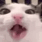
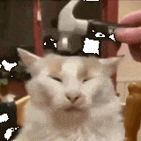
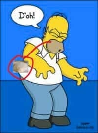
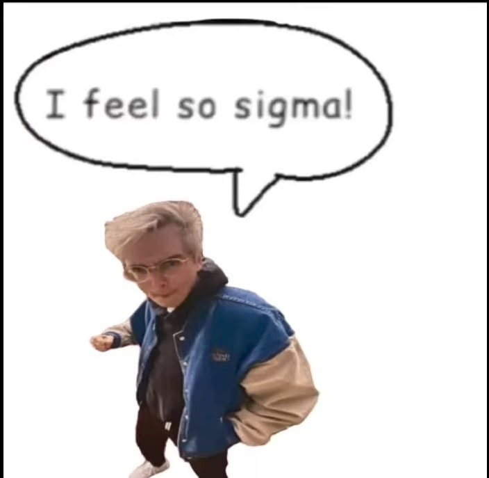

Welcome!
My name is the dressed mole-rat (not really), or jan Awa, and I'm 17 and Swedish. I enjoy languages, typography, programming, and math(s). This website is where I put fun things I want strangers to see.
The real normal person languages I know are Swedish and English, and almost French. I am however also fluent in the constructed language toki pona, and I enjoy everything there is to consume in the language. Generally, I think grammar and phonetics are interesting too, and I am currently making a conlang. (By currently making, I mean sometimes adding a word and then forgetting about it for a while)
As I said, I enjoy ambigrams. Most people, however, don't seem to know what they are, so boy let me tell ya. An ambigram is a typographical thing you can do where a word (or phrase) can be read in multiple ways. Most commonly, an ambigram is a word that's written weirdly, so you can turn it upside down and still read it. A funner version of that is when you turn it and it says something else! I both make and regularly look at ambigrams, because they are so fun. (I've also made a generator that produces sometimes readable ambigrams)

I'm also really interested in fonts! I'm not a good font maker (I've only made bitmap fonts and modified some actual ones), but it's fun to identify them and to watch lengthy Youtube videos about them and typography in general.
When it comes to computers I'm not the best, (I still use windows and ios ew), but I know enough HTML and CSS to for example make this website. I have also made things in Python, C#, as well as weird freaky languages like Brainfuck and Javascript.
I spend most of my free time watching Youtube or coding things in Python or Godot. I sometimes play one of a few video games, including minecraft and Zelda. In ascending order of my enjoyment, the Zelda games I've beaten are: Ocarina of Time, Tears of the Kingdom, The Adventure of Link, and Breath of the Wild. I also like going on walks in the Swedish forest, on which I have encountered wild boars which is pretty scary. So far they have not run towards me, but not directly away from me either. I always bring binoculars because I love identifying both constellations and birds. I drink two to five cups of tea per day. (yum)
toki pona
There are around 130 words in toki pona. This means every word has quite a broad meaning, and that you often have to combine words to mean something. "telo" for example means "liquid" broadly, but in context, it often means water or soda or anything that's relevant in the conversation. You can always try to be as specific as you are in a natural language, but the details are often not important, so you often just don't say them.
The birth of toki pona took place in 2001. A Canadian woman named Sonja was depressed, so she invented a minimalist language with a total of 120 words (obviously). After she published the language online, people started learning and using it. Since then it has evolved, and now, toki pona has 139 official words, and maybe a couple thousand speakers? (Based on the discord server members)